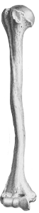

The Bone Wars, also known as the Great Dinosaur Rush, was a period of intense and ruthlessly competitive fossil hunting and discovery during the Gilded Age of American history, marked by a heated rivalry between Edward Drinker Cope (of the Academy of Natural Sciences of Philadelphia) and Othniel Charles Marsh (of the Peabody Museum of Natural History at Yale). Each of the two paleontologists used underhanded methods to try to outdo the other in the field, resorting to bribery, theft, and the destruction of bones. Each scientist also sought to ruin his rival’s reputation and cut off his funding, using attacks in scientific publications.
Designed by: Sara Berman
Creative Direction: Natalia Oledzka
Produced for Interaction Foundations
Sam Fox School of Design & Visual Arts
Washington University in St. Louis ©2018
Copy source: https://en.wikipedia.org/wiki/Bone_Wars
Image source: https://www.nlm.nih.gov/exhibition/historicalanatomies/cheselden_home.html
Creative Direction: Natalia Oledzka
Produced for Interaction Foundations
Sam Fox School of Design & Visual Arts
Washington University in St. Louis ©2018
Copy source: https://en.wikipedia.org/wiki/Bone_Wars
Image source: https://www.nlm.nih.gov/exhibition/historicalanatomies/cheselden_home.html